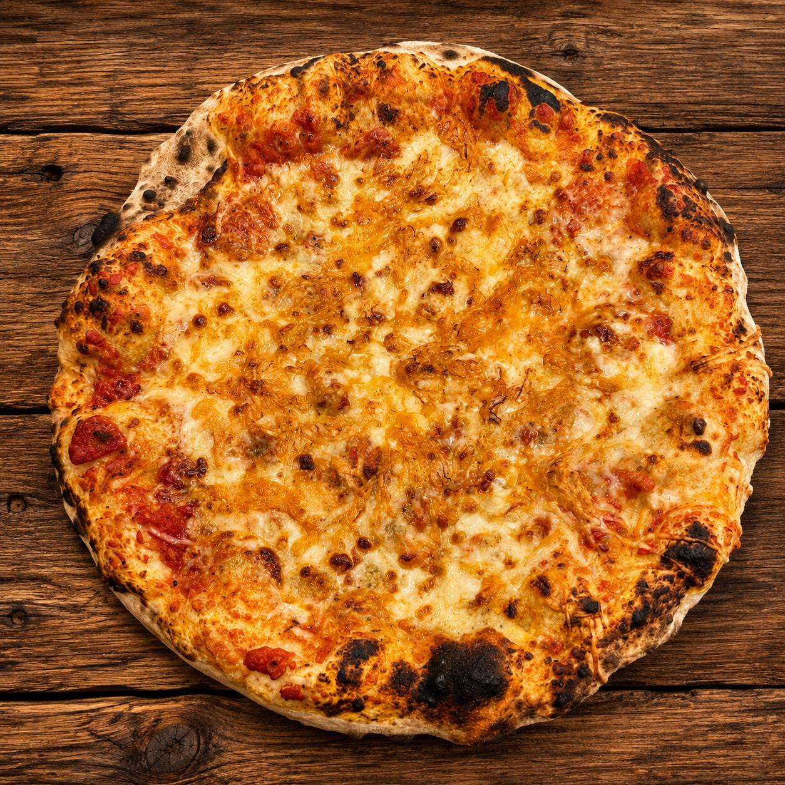
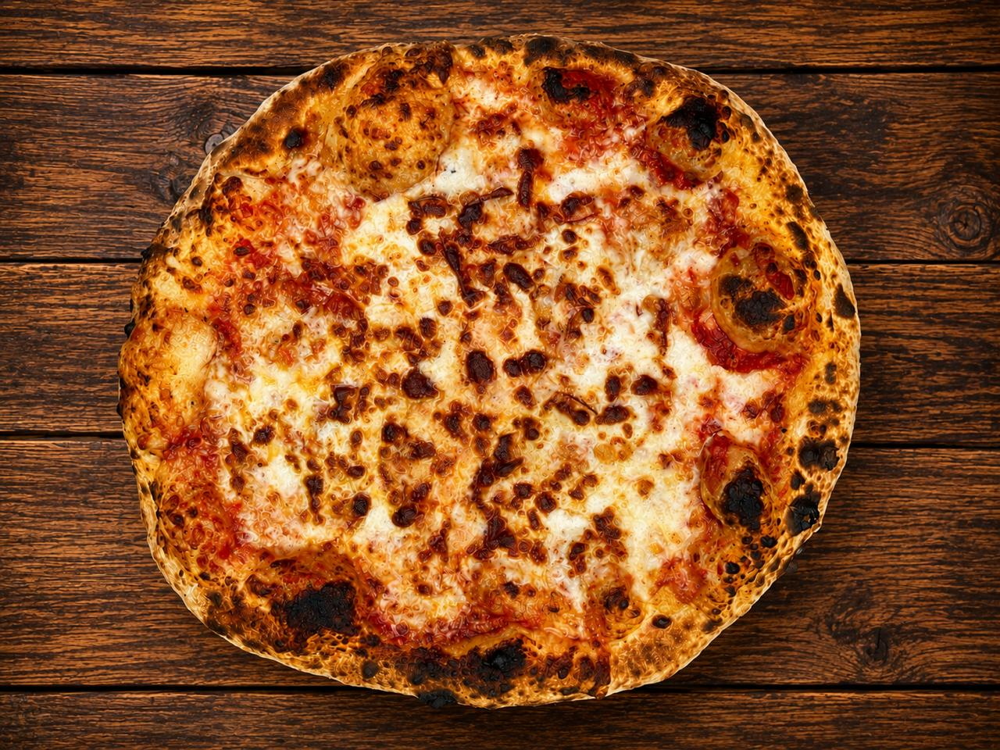

Pizza Serranita

Pizza Provola

Pizza Newyork
Encuadre cenital, pizza completa y centrada, sobre madera cálida. Nada de manos, platos ni cubiertos. Recorte cuadrado para las filas del menú, 4/5 para el héroe. Las cinco pizzas restantes no tienen foto: se muestran sin imagen, nunca con una foto de otra pizza.